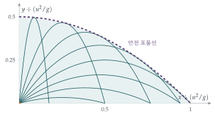

STEP II 2014, 문제 10
계속 읽기 전에 문제를 먼저 읽어 보자. 문제는 STEP Support Programme의 문제 데이터베이스에 있다: step.maths.org/questions/14-s2-q10
도입
분수대가 모든 방향으로 같은 속력으로 물을 뿜어 올린다. 물줄기들은 바깥 경계가 뚜렷한, 반짝이는 돔을 이룬다. 그 안쪽의 모든 점은 물이 지나가고, 바깥쪽에는 물이 전혀 닿지 않는다. 그 경계는 포물선이며 안전 포물선(parabola of safety)이라고 부른다. 주어진 포구 속력의 대포로는 어떤 각도로 쏘더라도 이 곡선 바깥에 있는 표적을 맞힐 수 없기 때문이다.
놀라운 점은 이 경계 자체가 궤적(trajectory) 가운데 하나가 아니라는 것이다. 그것은 궤적 전체로 이루어진 곡선족의 포락선(envelope), 즉 모든 궤적에 한 번씩 접하는 곡선이다. 이는 8.1 절에서 직선 \(y = 0\)이 포물선족에 접했던 것과 똑같다. 이 문제는 이차식의 판별식(discriminant)만으로 이 곡선을 찾아낸다.
시작하기 전에
\(x\)와 \(y\)를 \(t\)로 나타낸 다음 \(t\)를 소거하여라. \(\sec^2\theta\)를 \(\lambda = \tan\theta\)로 어떻게 나타낼 수 있는가?
\(x = ut\cos\theta\), \(y = ut\sin\theta - \frac12gt^2\)에 \(t = \frac{x}{u\cos\theta}\)를 대입하면 \[y = x\tan\theta - \frac{gx^2}{2u^2\cos^2\theta} = \lambda x - \frac{gx^2}{2u^2}(1 + \lambda^2),\] 이다. 여기서 \(\sec^2\theta = 1 + \tan^2\theta\)를 이용하였다.
차근차근 풀기
단계 1 \(x\)를 고정하고 각도를 바꾸기
고정된 \(x > 0\)에 대하여 \(y\)를 \(\lambda\)의 함수로 생각하자. 이것은 어떤 종류의 함수인가? \(\lambda\)가 모든 실수를 움직일 때 이 함수는 어떤 값들을 갖는가?
고정된 \(x\)에 대하여 \(y\)는 \(\lambda\)에 대한 이차식이고, 최고차항의 계수 \(-\frac{gx^2}{2u^2}\)는 음수이다. 즉 \(\lambda\)에 대하여 위로 볼록한 포물선이다. 따라서 최댓값을 가지며, \(\lambda \to \pm\infty\)일 때 \(y \to -\infty\)이다. 연속함수이므로 최댓값 이하의 모든 값을 갖는다. 최댓값은 \(\frac{\mathrm{d}y}{\mathrm{d}\lambda} = x - \frac{gx^2}{u^2}\lambda = 0\), 즉 \(\lambda = \frac{u^2}{gx}\)일 때이고, 이때 \[Y = \frac{u^2}{gx}\,x - \frac{gx^2}{2u^2}\Bigl(1 + \frac{u^4}{g^2x^2}\Bigr) = \frac{u^2}{2g} - \frac{gx^2}{2u^2}. \qed\] (같은 말로, 점 \((x, y)\)에 도달할 수 있는 것은 이차방정식 \(\frac{gx^2}{2u^2}\lambda^2 - x\lambda + \frac{gx^2}{2u^2} + y = 0\)이 실근 \(\lambda\)를 가질 때와 정확히 같고, 판별식 조건에서 \(y \leq Y\)를 얻는다.)
단계 2 영역
곡선 \(Y = \frac{u^2}{2g} - \frac{gx^2}{2u^2}\)는 꼭짓점이 \(\bigl(0, \frac{u^2}{2g}\bigr)\)인 위로 볼록한 포물선이다. 이 꼭짓점의 높이는 똑바로 위로 쏘았을 때 도달하는 높이이고, 이 곡선은 최대 사거리(maximum range)인 \(x = \pm\frac{u^2}{g}\)에서 지면과 만난다. 이 곡선 위 또는 아래에 있는(그리고 지면 위에 있는) 모든 점에는 도달할 수 있고, 곡선보다 위에 있는 점에는 도달할 수 없다(그림 11.9.1).
곡선보다 엄밀히 아래에 있는 점을 지나는 궤적은 몇 개인가? 곡선 위의 점은 어떠한가?
곡선 아래의 점은 \(\lambda\)에 대한 이차방정식이 서로 다른 두 실근을 갖는 경우에 해당한다. 즉 발사각이 두 개, 높은 각 하나와 낮은 각 하나가 있다. 곡선 위의 점은 중근을 갖는 경우에 해당한다. 즉 궤적이 정확히 하나 있고, 그 궤적은 그 점에서 곡선에 접한다.

단계 3 가장 먼 점
(지면 위 또는 그보다 위에서) \(O\)로부터 가장 먼, 도달 가능한 점은 경계 위에 있다. 거리의 제곱 \(x^2 + Y^2\)을 \(x^2\)의 함수로 나타내어라. 이 함수는 증가하는가, 감소하는가?
\(X = x^2\)이라 하자. 그러면 \[x^2 + Y^2 = X + \Bigl(\frac{u^2}{2g} - \frac{gX}{2u^2}\Bigr)^2, \qquad \frac{\mathrm{d}}{\mathrm{d}X}(x^2 + Y^2) = 1 - \frac{g}{u^2}\Bigl(\frac{u^2}{2g} - \frac{gX}{2u^2}\Bigr) = \frac12 + \frac{g^2X}{2u^4} > 0.\] 따라서 경계를 따라 바깥으로 갈수록 거리가 증가하고, 가장 먼 점은 경계가 지면과 만나는 \(x = \frac{u^2}{g}\)인 점이다. 최대 거리는 \[\frac{u^2}{g},\] 이고, 이는 \(45^\circ\)로 쏘는 보통의 최대 사거리 발사로 얻어진다.■
돌아보기
질문을 뒤집어라. 주어진 궤적이 어디로 가는지를 묻는 대신, 주어진 점을 지나는 궤적이 어떤 것들인지를 물어라.
매개변수에 대한 이차식. 각 점에 대하여 \(\lambda = \tan\theta\)에 대한 방정식은 이차방정식이고, 그 판별식이 그 점에 도달할 수 있는지를 결정한다.
둘, 하나, 또는 없음. 안쪽의 점에는 두 각도로, 경계 위의 점에는 한 각도로 도달하며, 바깥쪽의 점에는 어떤 각도로도 도달할 수 없다.
숨은 수학
포락선
일매개변수 곡선족(one-parameter family of curves) \(\mathrm{F}(x, y, \lambda) = 0\)은 종종 포락선, 즉 곡선족의 모든 곡선에 접하는 곡선을 갖는다. 포락선은 \(\mathrm{F} = 0\)과 \(\frac{\partial\mathrm{F}}{\partial\lambda} = 0\)을 연립하여 풀면 구할 수 있는데, 이는 우리가 \(\lambda\)에 대하여 \(y\)를 최대화하면서 한 일과 정확히 같다. 포락선은 과학 곳곳에 나타난다. 커피 잔 표면에 보이는 밝은 빛의 곡선은 반사된 광선들의 포락선으로, 화선(caustic)이라고 한다. 초음속 항공기의 소닉 붐은 항공기가 내는 음파들의 포락선인 마하 원뿔(Mach cone)을 따라 전달된다. 그리고 8.1 절에서는 미분방정식의 해들로 이루어진 곡선족의 포락선이 그 자체로 해, 곧 “특이”해였다.
초점
안전 포물선에는 놀라운 성질이 있다. 그 초점(focus)이 발사점 \(O\)라는 것이다. (포물선 \(y = c - \frac{x^2}{4c}\)의 초점은 원점이며, 여기서는 \(c = \frac{u^2}{2g}\)이다.) 각 궤적 역시 포물선이고, 모든 궤적의 초점은 \(O\)를 중심으로 하는 반지름 \(\frac{u^2}{2g}\)인 원 위에 있다. 이는 에너지로 설명할 수 있다. 높이 \(y\)에서 발사체의 속력은 \(\sqrt{u^2 - 2gy}\)이고, 이 값은 준선(directrix)의 높이 \(\frac{u^2}{2g}\)에서 0이 된다. 그리고 준선이 같은 직선이면서 \(O\)를 지나는 포물선들은 그 초점이 이 원 위에 있다.
갈릴레이(Galileo)는 1609년 무렵 발사체가 포물선을 따라 움직이며, 평지에서의 최대 사거리는 \(45^\circ\)일 때 얻어진다는 것을 보였다. 그의 제자이자 기압계의 발명자로 더 잘 알려진 에반젤리스타 토리첼리(Evangelista Torricelli)는 1644년 De motu gravium에서 안전 포물선을 발견하였다. 포병들에게 이것은 실용적인 질문, 즉 애초에 어떤 표적들이 사정거리 안에 있는가에 대한 답이었다. 토리첼리는 또한 주어진 점을 지나는 궤적들이 쌍으로 나타나며, 그 각도들이 그 점의 방향과 연직 방향에 대하여 대칭임을 보였다. 이것이 바로 이 문제의 높은 발사와 낮은 발사이다.
사고 기술
곡선족이 덮는 영역의 경계를 찾으려면, 점 하나를 고정하고 어떤 매개변수 값에 대하여 곡선이 그 점을 지나는지 물어라. 경계는 해의 개수가 바뀌는 곳이다.
점이 움직일 때 해의 개수를 세는 이 같은 아이디어는 광학의 화선 연구, 동역학계(dynamical system)의 분기(bifurcation) 연구, 그리고 방정식의 해의 개수가 어떻게 바뀔 수 있는지를 분류하는 파국 이론(catastrophe theory)의 바탕이다.
더 도전하기
폭발하는 불꽃놀이. STEP II 2023, 문제 10 (OCR에서 내려받는 2023년 시험지 묶음, zip 파일)에 도전해 보아라. 이 문제는 폭발로 흩어지는 입자들을 중심이 자유낙하하는 구로 보고, 안전 포물면을 따라 움직이는 입자를 찾는다.
비탈 위로 쏘기. 경사각이 \(\beta\)인 비탈면 위쪽으로 속력 \(u\)로 쏜 발사체의 최대 사거리를 구하여라. (힌트: 직선 \(y = x\tan\beta\)는 안전 포물선과 어디에서 만나는가?) 최적의 발사 방향이 비탈면과 연직 방향 사이의 각을 이등분함을 보여라.
두 각도. 점 \(P\)에 도달하는 두 각도가 \(OP\)와 연직 방향 사이의 각의 이등분선에 대하여 대칭임을 보여라.
초점들. 각도가 \(\theta\)인 궤적의 초점이 \(\bigl(\frac{u^2}{2g}\sin2\theta, -\frac{u^2}{2g}\cos2\theta\bigr)\)임을 보이고, 이로부터 초점들이 \(O\)를 중심으로 하는 원 위에 있음을 보여라.
더 읽을거리
David Morin, Introduction to Classical Mechanics (Cambridge University Press, 고전역학 입문서), 3장. 궤적들의 포락선을 다룬다.
J. W. Bruce, P. J. Giblin & C. G. Gibson, “On caustics of plane curves”, American Mathematical Monthly 88 (1981). 기하학에서의 포락선과 화선.
E. H. Lockwood, A Book of Curves (Cambridge University Press, 곡선에 관한 책). 포락선, 화선을 비롯한 여러 고전적인 곡선들을 작도법과 함께 다룬다.